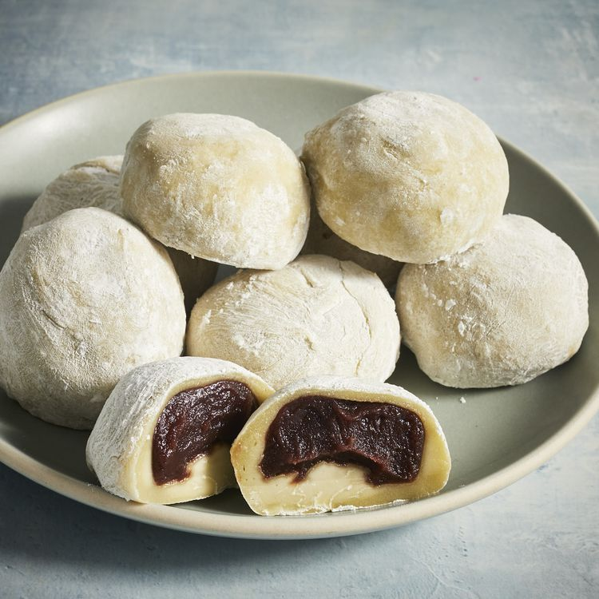

Mochi Recipe

Delicious Mochi filled with sweet red bean paste.
Mochi are small, sweet Japanese cakes made with glutinous
rice flour (mochiko). They have a soft, chewy outer layer and
a deliciously sticky filling made of sweetened red bean paste.
Freezing the red bean paste before you use it is optional but
it does make the process easier.
Satisfy your sweet tooth with homemade mochi. Trust us:
The process is way simpler than you think. This easy mochi
recipe comes together quickly with just a few ingredients.
What Is Mochi?
Mochi is a bun-shaped Japanese dessert made from sweet glutinous
rice flour, or mochigome. It has a soft, chewy texture that is
somewhat elastic. Mochi is often flavored with matcha (or green tea powder),
which gives it a light green hue.
What Is Mochi Made Of?
Red Bean Paste
You can buy sweetened red bean paste (also called adzuki bean paste or anko).
Glutinous Rice Flour
Make sure to get glutinous rice flour (mochigome) instead of regular rice flour.
This ingredient is essential for mochi's signature chewy texture.
Green Tea Powder
Green tea powder (or matcha) has a complex, earthy flavor that works well
with mochi. Plus, it gives the dessert its gorgeous green color.
Water
Water thins the dough, creating the perfect consistency (and making it easier
to work with).
Sugar
Plain granulated white sugar will add just the right amount of sweetness.
Cornstarch
Cornstarch prevents sticking when you're rolling out the dough.
Ingredients
- 1 cup sweetened red bean paste
- 1 cup glutinous rice flour
- 1 teaspoon green tea powder (matcha)
- 1 cup water
- ¼ cup white sugar
- ½ cup cornstarch, for rolling out the dough
Directions
- Wrap red bean paste in aluminum foil and place in the freezer until solid, at least 1 hour.
- Mix glutinous rice flour and green tea powder thoroughly in a microwave-safe bowl. Stir in water, then sugar; mix until smooth.
- Cover the bowl with plastic wrap and microwave for 3 minutes 30 seconds.
- Meanwhile, remove red bean paste from the freezer and divide into 8 equal balls. Set aside.
- Remove rice flour mixture from the microwave. Stir and heat, covered, for another 15 to 30 seconds.
- Dust a work surface with cornstarch. Roll about 2 tablespoons of hot rice flour mixture into a ball. Flatten the ball and place one ball of frozen red bean paste in the center. Pinch and press the dough around the bean paste until completely covered. Sprinkle with additional cornstarch and place mochi, seam-side down, in a paper muffin liner to prevent sticking.
- Repeat Step 6 to make remaining mochi.